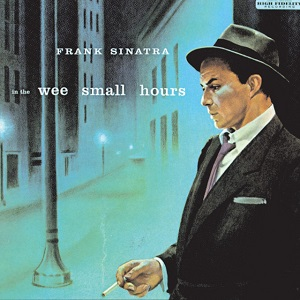
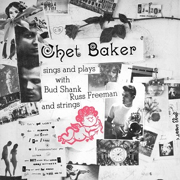
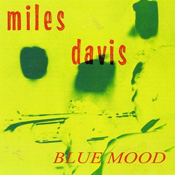
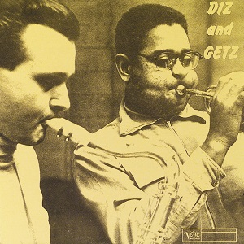
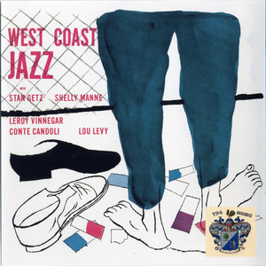
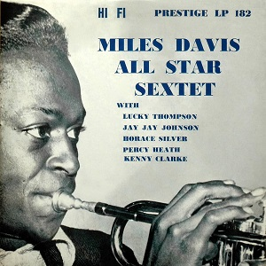
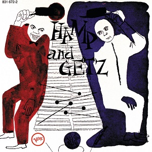
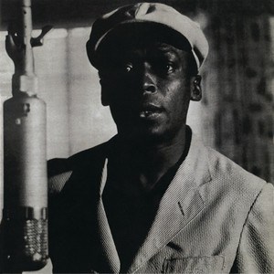
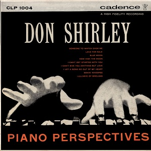

1955: Albums of the Year
-

Frank Sinatra
In the Wee Small Hours
6½
-

Chet Baker
Sings and Plays With
5
-

Miles Davis
Blue Moods
3¼
-

Dizzy Gillespie / Stan Getz
Diz and Getz
2¾
-
Aldemaro Romero
Dinner in Caracas
2½
-

Stan Getz
West Coast Jazz
2½
-

Miles Davis All Star Sextet
Miles Davis All Star Sextet
2½
-

Lionel Hampton / Stan Getz
Hamp and Getz
2¼
-

Miles Davis Quartet
The Musings of Miles
2
-

Don Shirley
Piano Perspectives
1¾